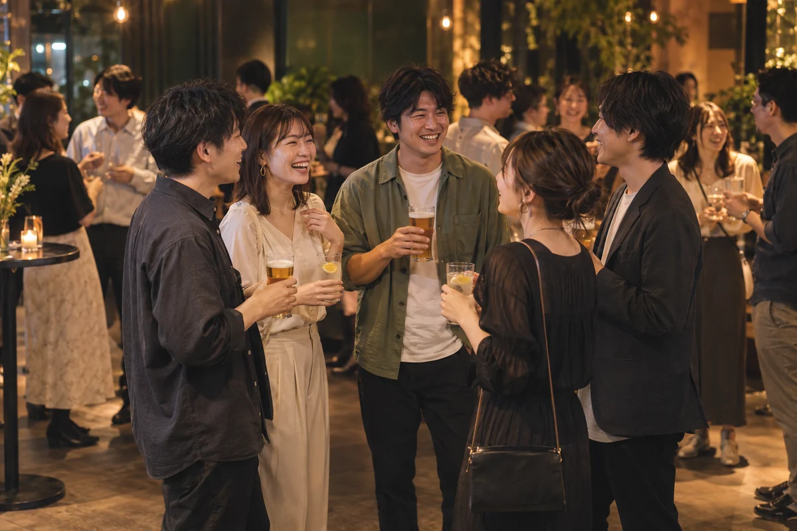

次回開催TOMONOWA / 0918
FRIDAY
20:00–22:30
20:00–22:30
TOMONOWA PARTY
一週間の終わりに、新しいつながりを。
女性¥2,000
男性¥5,000
RE:STARTキャンペーン最終週
9月18日に参加予約する Googleフォームでお申込み・別タブで開きます

01 / ABOUT TOMONOWA
職場と家の往復に、ひとつ寄り道を。
いつもの友達の輪に、新しい誰かを。
TOMONOWAは、会話を楽しみながら
自然につながれる、大人のイベントコミュニティ。
少しの勇気で来た夜が、次の楽しみになる。
そんな時間を、TOMONOWAでつくっています。

Good times.
New friends.
02 / EVENT AREA & SCHEDULE
東京・大塚 会場：PICROSS
SEPTEMBER 2026
復活祭記念・通常より各 ¥1,000 OFF
行きたい日付を選んで、参加予約へ。全日程 20:00–22:30 ／ 2.5時間 飲み放題
一週間の終わりに、新しいつながりを。
9月最後の金曜も、心地よい会話から。
03 / COME AS YOU ARE
はじめての場所は、少し緊張するもの。
その一歩を、私たちが迎えます。
受付から最初の輪に入るまで。会場のアテンダーが、自然に話せるきっかけをつくります。
人数をむやみに増やさず、一人ひとりとの会話を大切に。無理に盛り上がらなくても大丈夫です。
会話に入りづらいとき、少し場所を変えたいとき。遠慮なくアテンダーに声をかけてください。
YOUR FIRST TOMONOWA
お申込みから、当日の会話まで。
参加したい日程のフォームからお申込み。開催日時と会場を確認して、当日を楽しみに。
予約したイベントの会場へ。当日払いの方は参加費を現金でお持ちいただき、受付でお名前をお伝えください。
みんなで乾杯をしたら、話してみたい人と自由に会話を。ドリンクを片手に、立食スタイルで交流を楽しめます。
04 / WEEKEND WITH TOMONOWA
TOMONOWA（トモノワ）は、人と人のつながりをつくるイベントコミュニティです。
TOMONOWAEVENT COMMUNITY
9月のTOMONOWA PARTYは、大塚PICROSSで開催。
一人でも、友達とでも、お気軽にご参加ください。
05 / BEFORE YOU COME
はじめての一歩が、少し軽くなるように。
はい、参加者の半分以上が一人で参加されているので大丈夫です。初めての方も、お気軽にご参加ください。
当日払いの方は参加費を現金でお持ちいただき、受付でお名前をお伝えください。事前振込の方は、振込完了画面をご提示ください。
変更・キャンセルは、開催当日の開始時刻の3時間前までにご連絡ください。それまでにキャンセルのご連絡がない場合、参加費の100％をキャンセル料としてお振込みいただきますので、ご注意ください。
当日の受付で、振込完了画面をご提示ください。
近くのアテンダーにお気軽に声をかけてください。会話のきっかけづくりや、別の輪へのご案内をお手伝いします。無理をせず、ご自身のペースでお楽しみください。
YOUR NEXT CONNECTION STARTS HERE.
一人でも、友達とでも。
新しい輪のはじまりを、TOMONOWAで。